Día 6: isometría y control + core (abdomen y zona media) (sin equipo)
Hoy trabajamos isometría y control, core (abdomen y zona media), cardio y capacidad pulmonar con ejercicios simples que caben en una habitación. El objetivo es construir fuerza útil, resistencia y control corporal con el mínimo de equipo.
Prioriza la técnica, respira con control y acumula consistencia: incluso una sesión corta suma cuando la repites día tras día.
Nota importante antes de comenzar
Antes de empezar: haz el calentamiento y repasa la respiración. (No lo saltes.)
La idea principal de esta sesión es aprender a exhalar el aire por completo. Si no vaciamos bien los pulmones, tampoco podemos llenarlos bien después: la sangre no se satura de oxígeno de forma óptima, se ralentizan los procesos oxidativos en el organismo y el cuerpo empieza a acumular grasa. La quema de grasa es, en realidad, la oxidación del tejido adiposo gracias al oxígeno durante el trabajo muscular. Cuando la grasa es excesiva, también se altera el equilibrio hormonal, y los problemas solo se acumulan. La calidad y la duración de tu vida están directamente relacionadas con la manera en que respiras. No es casualidad que las prácticas antiguas den tanta importancia a la respiración: mira a los yoguis y aprende de ellos. Aunque algunos ejercicios de este día parezcan trabajo clásico de abdomen, en realidad todo el entrenamiento está dedicado a educar la respiración. El conjunto de ejercicios de este día es recomendable hacerlo a diario en ayunas o, como mínimo, un día sí y otro no. Aquí activamos no solo la musculatura responsable de la respiración diafragmática y torácica, sino que también realizamos un masaje profundo de los órganos internos. Si entrenas con el estómago lleno, pueden aparecer náuseas e incluso vómitos. Vigila que durante el trabajo no aparezcan “estrellas” delante de los ojos, oscuridad en la visión ni zumbido en los oídos: son señales de que has ido demasiado lejos. Acostumbra a tu cuerpo a respirar correctamente y te sentirás más ligero no solo en el entrenamiento, sino también en la vida diaria. En realidad, cualquier entrenamiento funciona mejor así, pero en el Día 6 es especialmente importante por los últimos ejercicios, que implican una activación profunda del diafragma y un masaje intenso de los órganos internos. Deja pasar al menos 3–4 horas después de la última comida antes de empezar la rutina.
1. Colgamientos parciales con apoyo en las puntas de los pies

Cuelga de una barra o cualquier soporte sólido que no pueda romperse. No cuelgues todo tu peso: deja una parte del peso sobre las puntas de los pies para mantener un estiramiento seguro y controlado. Relaja los hombros y permite que la columna se alargue de forma natural; si es posible, inclina ligeramente la pelvis hacia adelante para mejorar la descompresión de la espalda. Mantén la posición durante 10 segundos y repite 10 veces.
2. Isometría “aplastar el coco” para deltoides posterior
Protocolo isométrico: tensión 10 s + descanso 5 s × 10 repeticiones (por lado, si aplica). Respira 3‑3‑3 durante la tensión (inhalar 3 s, retener 3 s, exhalar 3 s) y usa 3‑6‑3 entre series para recuperar. Más detalles: Respiración.
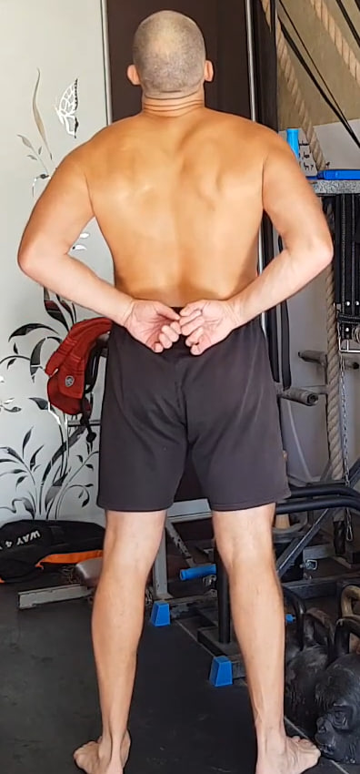
Entrelaza las manos detrás de la espalda, justo por encima de la cintura. Desde ahí intenta “aplastar un coco imaginario” entre los omóplatos: lleva ligeramente los codos hacia afuera y genera una contracción fuerte en la parte alta de la espalda, enfocándote en el deltoides posterior y la zona interescapular. La espalda no debe arquearse hacia atrás; el trabajo es interno, solo tensión muscular.
3. Isometría del dorsal ancho (parte externa)
Protocolo isométrico: tensión 10 s + descanso 5 s × 10 repeticiones (por lado, si aplica). Respira 3‑3‑3 durante la tensión (inhalar 3 s, retener 3 s, exhalar 3 s) y usa 3‑6‑3 entre series para recuperar. Más detalles: Respiración.
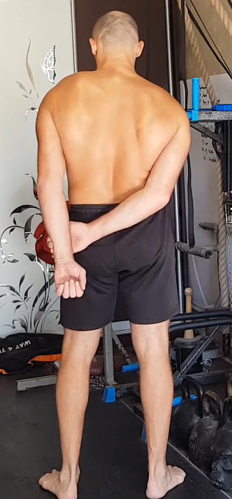
Coloca un brazo totalmente recto detrás de la espalda. Con la otra mano sujeta firmemente la muñeca o el antebrazo del brazo de trabajo, creando un punto de agarre sólido. Desde esta posición intenta llevar el brazo recto hacia tu cuerpo, mientras la parte externa del dorsal ancho se opone y no permite que el brazo se acerque. Ajusta ligeramente la altura de los brazos hasta sentir la contracción clara en el lateral de la espalda.
4. Isometría del dorsal ancho (zona externa inferior)
Protocolo isométrico: tensión 10 s + descanso 5 s × 10 repeticiones (por lado, si aplica). Respira 3‑3‑3 durante la tensión (inhalar 3 s, retener 3 s, exhalar 3 s) y usa 3‑6‑3 entre series para recuperar. Más detalles: Respiración.
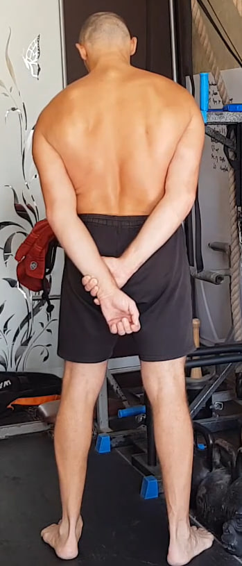
Coloca las manos entrelazadas detrás de la espalda un poco más abajo que la línea de la cintura. Mantén los brazos rectos o casi rectos y lleva ligeramente los codos hacia atrás. Desde esta posición intenta tirar de los brazos hacia adentro y hacia arriba mientras la zona externa e inferior del dorsal ancho se opone y evita cualquier movimiento. La contracción debe sentirse en el lateral bajo de la espalda, justo debajo de las costillas. Coloca las manos entrelazadas detrás de la espalda unos 10–15 cm más abajo que en el ejercicio anterior.
5. Elevaciones de espalda y piernas (“barco dinámico”)

Acuéstate boca abajo con las piernas estiradas y las manos detrás de la cabeza. Desde esta posición eleva simultáneamente el pecho, los codos y las piernas del suelo, creando una contracción fuerte en toda la espalda, glúteos y zona lumbar. No busques velocidad: el movimiento debe ser controlado, con una subida limpia y una bajada suave. Mantén la mirada hacia el suelo para no forzar el cuello. Realiza 10 repeticiones.
6. Peso muerto isométrico “bloqueado”
Protocolo isométrico: tensión 10 s + descanso 5 s × 10 repeticiones (por lado, si aplica). Respira 3‑3‑3 durante la tensión (inhalar 3 s, retener 3 s, exhalar 3 s) y usa 3‑6‑3 entre series para recuperar. Más detalles: Respiración.
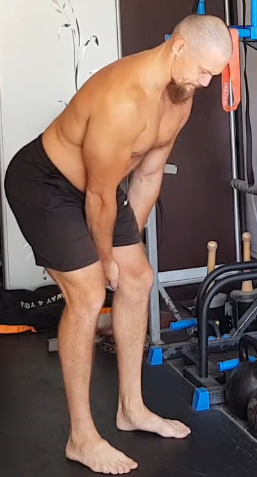
Colócate de pie con los pies al ancho de los hombros e inclina el torso hacia adelante manteniendo la espalda firme y recta. Sujeta con las manos las rodillas o la parte superior de las piernas, creando un punto de anclaje que bloquea el movimiento. Desde ahí intenta levantar el torso como en un peso muerto real, pero las manos no permiten que el cuerpo suba, generando una tensión muy fuerte en la espalda baja, glúteos y cadena posterior.
7. Rotura en tres puntos con toalla
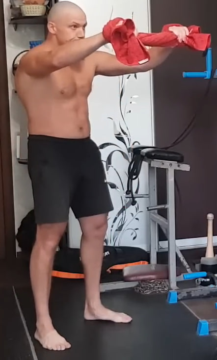
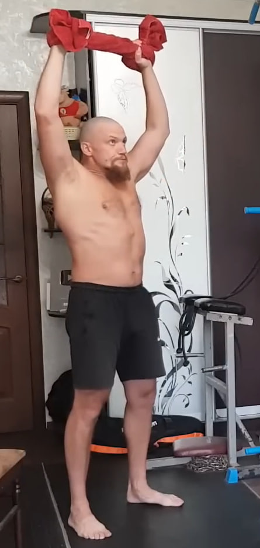

Utiliza una toalla, cinturón de kimono o cinta que no se estire . Trabajarás en tres posiciones: con los brazos al frente a la altura del pecho, por encima de la cabeza y abajo frente a los muslos. En cada posición intenta “romper” la toalla tirando con la máxima fuerza hacia los lados. Pasa enseguida a la siguiente posición. Las tres posiciones consecutivas cuentan como un ciclo. Enrolla el material en las muñecas dejando unos 46 cm de distancia entre las manos. En cada punto tarda 3 segundos en entrar en la tensión, mantén 6 segundos de fuerza máxima como si realmente quisieras romper la toalla y usa 3 segundos para soltar. Completa 10 ciclos.
8. Saltos en posición de plancha
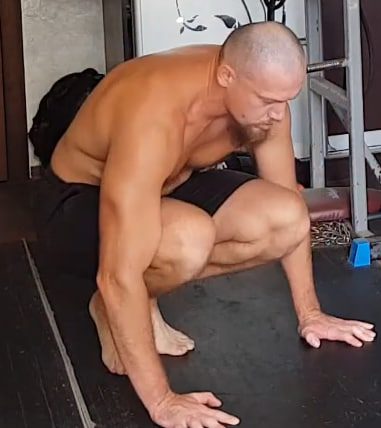
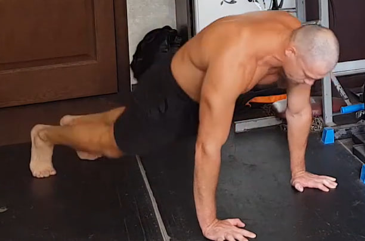
Comienza en posición de plancha con los brazos extendidos. Desde ahí, salta llevando los pies hacia adelante debajo del pecho y vuelve atrás a la plancha con otro salto. Mantén el abdomen firme y evita que la cadera se hunda. Realiza 10 repeticiones seguidas con un ritmo elástico y continuo.
9. Elevación parcial del abdomen
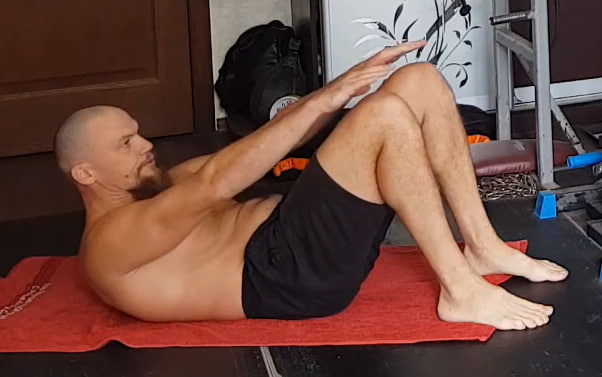
Repite el ejercicio de abdomen. Realiza 10 repeticiones lentas y controladas.
10. Respiración diafragmática de fuerza con expulsión de objeto
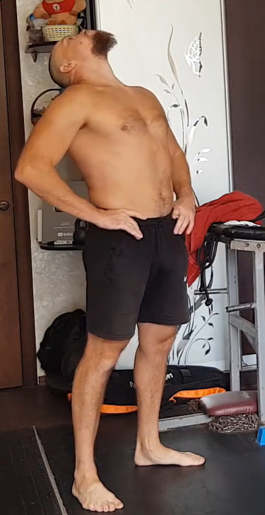
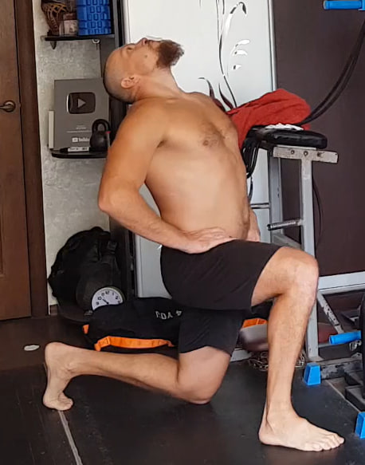
Ponte de pie o de rodillas con las manos en la cintura para sentir la tensión del abdomen. Inhala profundo y luego expulsa el aire con fuerza, activando al máximo el diafragma, los músculos intercostales y toda la zona abdominal. Usa un trozo de papel o tela ligera y lánzalo hacia arriba con la exhalación, intentando elevarlo lo más alto posible.
El objetivo no es solo un soplido fuerte, sino también mantener el objeto flotando en el aire el mayor tiempo posible, controlando la salida del aire sin perder la tensión en el abdomen. Evita la hiperventilación: si aparecen puntos negros delante de los ojos, zumbido en los oídos o sensación de mareo, detén el ejercicio de inmediato. Realiza 10 intentos con respiración segura y controlada.
11. Uddiyana Bandha con bombeo abdominal


Colócate de pie con los pies al ancho de los hombros e inclínate ligeramente hacia adelante, apoyando las manos por encima de las rodillas. Exhala todo el aire hasta vaciar completamente los pulmones y realiza una retención con los pulmones vacíos. En esta apnea, eleva el diafragma hacia arriba y mete el abdomen hacia dentro creando un “vacío” abdominal. Después relaja el abdomen y deja que salga hacia afuera, siempre sin tomar aire. Cada retención cuenta como una repetición. Repite este ciclo de meter y soltar el abdomen tantas veces como puedas mientras mantienes la retención.
Cierre
Experimenta: ajusta ángulos, rango y puntos de tensión hasta encontrar la versión que te sienta bien. Lo importante es que el entrenamiento sea sostenible y te dé ganas de volver. Crea condiciones para entrenar con regularidad, aunque sea poco: 10 minutos cuentan. Esta rutina está pensada para eso: que puedas cumplir incluso con poco espacio, poco tiempo y circunstancias difíciles.